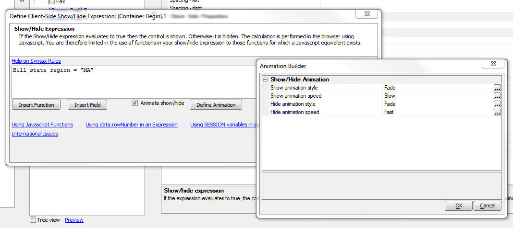

Grid and Dialog Component - Client-side Show/Hide Expressions - Animation
When you define a client-side show/hide expression, you can now also specify an animation effect to execute when the target object is show or hidden.As shown in the image below, when you open the expression builder, there is a new checkbox 'Animate show/hide'. When this box is clicked, the 'Define Animation' button is shown. The image below shows the dialog that is shown when the button is pressed.
When you examine the expression in the property Grid, it will look something like this:
[Fade,Slow|Fade,Fast]]Bill_state_region = "MA"
The animation expression is prepended to the actual show/hide expression. It is enclosed in and ] braces. It shows the animation effect and duration for the 'show' action and the 'hide' action.
